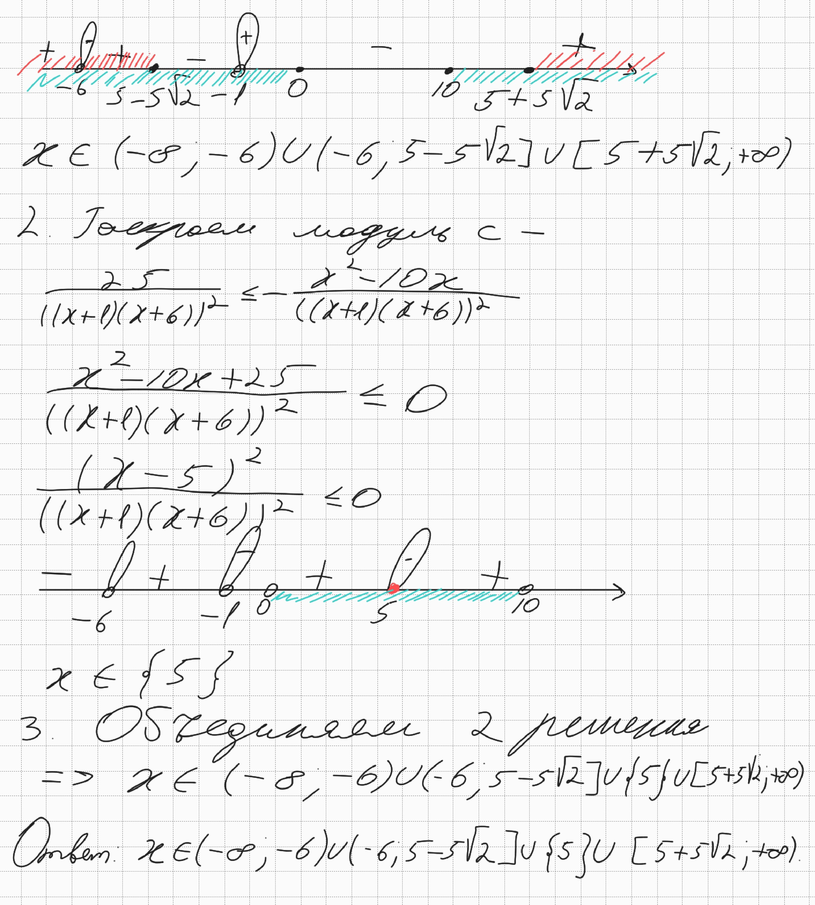
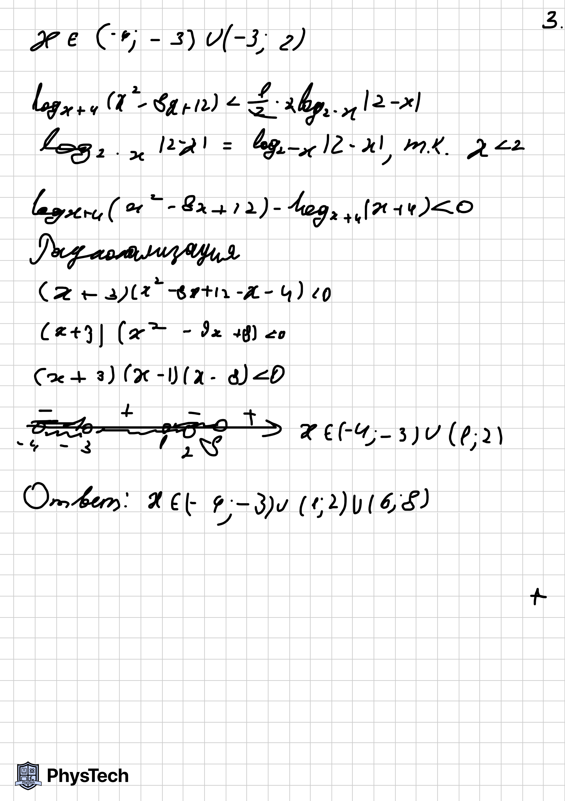

15. Неравенства
Задача 1 #0003
Решите неравенство:
$$x+\frac{4x^2+5x}{x^2-x-6}>\frac{9}{5x-15}+\frac{5x+1}{5x+10}$$
Ответ
$$\ x\in\left(-2;1\right)\cup\left(3;+\infty\right)$$
Задача 2 #0004
Решите неравенство:
$$\frac{x^2+3x+4}{x^2+4x+3}\geq x$$
Ответ
$$x\in\left(-\infty;-3\right)\cup\left\{-2\right\}\cup\left(-1;1\right]$$
Задача 3 #0016
Решите неравенство:
$$\left(\left(x+1\right)^{-1}-\left(x+6\right)^{-1}\right)^2\le\frac{\left|x^{2}-10x\right|}{\left(x^{2}+7x+6\right)^{2}}$$
Ответ

$$x\in\left(-\infty;\right.-6)\cup\left(-6;5-5\sqrt{2}\right\rbrack\cup\left\lbrace5\right\rbrace\cup\left\lbrack5+5\sqrt{2};+\infty\right)$$
Задача 4 #0018
Решите неравенство:
\[{\frac{25^{x}-7\cdot5^{x}+6}{25^{x}-4\cdot5^{x}+3}}\ge{\frac{5^{x}-8}{5^{x}-3}}+{\frac{1}{5^{x}-5}}.\]
Ответ

Задача 5 #0019
Решите неравенство:
\[{\frac{10^{x}-25\cdot2^{x}-2\cdot5^{x}+50}{5x-x^{2}-4}}\geq0.\]
Ответ

Задача 6 #0020
Решите неравенство:
\[\log_5\left(\left(3-x\right)\left(x^2+2\right)\right)\geq\log_5\left(x^2-7x+12\right)+\log_5\left(5-x\right).\]
Ответ

Задача 7 #0021
Решите неравенство:
\[\log_{8}\left(x^{3}-3x^{2}+3x-1\right)\geq\log_{2}\left(x^{2}-1\right)-5\]
Ответ
\[x\in\left(1;31\right\rbrack\]
Задача 8 #0022
Решите неравенство:
\[\frac{36^{x^{2}+2x-7,5}-\left(\frac{1}{6}\right)^{x^{2}-3x+1}}{\frac{1}{5}\cdot25^{2x-2,5}-1}\geqslant0.\]
Ответ
РЕШЕНИЕ СКОРО БУДЕТ ДОСТУПНО!
\[x\in\left\lbrack-\frac{7}{3};\frac{3}{2}\right)\cup\left\lbrack2;+\infty\right)\]
Задача 9 #0023
Решите неравенство:
\[\log_{16}\left(x+5\right)+{\mathrm{\log}}_{\left(x^2+10x+25\right)}2\geq\frac{3}{4}.\]
Ответ


Задача 10 #0024
Решите неравенство:
\[{2\mathrm{\log}}_{\left(x^2-8x+17\right)^2}\left(3x^2+5\right)\le{\mathrm{\log}}_{x^2-8x+17}\left(2x^2+7x+5\right).\]
Ответ


Задача 11 #0026
Решите неравенство:
\[\log_{|x-2|}(4+7x-2x^{2})\geq2\]
Ответ
\[x\in\left\lbrack0;1\right)\cup\left(3;\frac{11}{3}\right\rbrack\]
Задача 12 #0027
Решите неравенство:
\[{\frac{\log_{3}\left(3-x\right)-\log_{3}\left(3x+2\right)}{\log_{3}^{2}x^{2}+2\log_{3}x^{4}+4}}\geq0.\]
Ответ


Задача 13 #0028
Решите неравенство:
\[27^{lg(x-1)}\leq\left(x^2-1\right)^{lg3}.\]
Ответ
\[x\in\left(1;3\right\rbrack\]
Задача 14 #0029
Решите неравенство:
\[\frac{\log_{8}x}{\log_{8}\left(\frac{x}{64}\right)}\geq\frac{2}{\log_{8}x}+\frac{3}{\log_{8}^{2}x-\log_{8}x^{2}}.\]
Ответ
\[x\in\left(0;1\right)\cup\left\lbrace8\right\rbrace\cup\left(64;+\infty\right)\]
Задача 15 #0030
Решите неравенство:
\[\left(\log_{|2x+0,5|}{\left(0,25-x\right)-1)}\cdot\log_9{\left(0,25-x\right)}>{\mathrm{\log}}_3\frac{0,25-x}{\left|2x+0,5\right|}\right.\]
Ответ


Задача 16 #0031
Решите неравенство:
\[{\frac{\log_{3^{x+4}}27}{\log_{3^{x+4}}(-81x)}}\leq{\frac{1}{\log_{3}\log_{\frac{1}{3}}3^{x}}}\]
Ответ
\[x\in\left\lbrack-9;-4\right)\cup\left(-4;-1\right)\cup\left(-\frac{1}{81};0\right)\]
Задача 17 #0033
Решите неравенство:
\[{{\mathrm{\log}}_{\left|x\right|}\frac{\left|x+3\right|-\left|x\right|}{2-x}>1}\]
Ответ
\[x\in\left(-1;2-\sqrt{7}\right)\cup\left(1;2\right)\]
Задача 18 #0034
Решите неравенство:
\[9^{{\mathrm{\log}}_2\left(x-1\right)-1}-8\!\cdot5^{{\mathrm{\log}}_2\left(x-1\right)-2}>\!9^{\mathrm{log}_2(x\!-\!1)}\!-\!16\cdot5^{\mathrm{log}_2(x\!-\!1)\!-\!1}.\]
Ответ
\[x\in\left(1;5\right)\]
Задача 19 #0035
Решите неравенство:
\[\frac{5^{{\left(x^2-3\right)\mathrm{\log}}_{\sqrt{5}}\left(3\right)}-27^{x+7}}{6-x}\ge0.\]
Ответ
\[x\in\left(-\infty;-3\right\rbrack\cup\left\lbrack\frac{9}{2};6\right)\]
Задача 20 #0036
Решите неравенство:
\[4\cdot2^{{\mathrm{\log}}_3\left(5-x\right)}+2^{{\mathrm{\log}}_3\left(x+1\right)}-2^{{\mathrm{\log}}_3\left(5x-x^2\right)}\le8.\]
Ответ
\[x\in\left\lbrack2;5\right)\]
Задача 21 #0037 Источник: Ларин, вариант №448
Решите неравенство:
\[\log_{|2x+2|}(1-9^x)<\log_{|2x+2|}(1+3^x)+\log_{|2x+2|}\left({\frac{5}{9}}+3^{x-1}\right).\]
Ответ
\[x\in\left(-\frac{3}{2};-1\right)\cup\left(-\frac{1}{2};0\right)\]
Задача 22 #0038
Решите неравенство:
\[\frac{\left(4x-\left|x-6\right|\right)\left({\mathrm{\log}}_{\frac{1}{3}}\left(x+4\right)+1\right)}{2^{x^2}-2^{\left|x\right|}}\ge0.\]
Ответ
\[x\in\left(1;\frac{6}{5}\right\rbrack\]
Задача 23 #0039
Решите неравенство:
\[32\cdot2^{x^2+3x}-{\frac{2^{x^2}}{16}}+1\geq2^{3x+9}.\]
Ответ
\[x\in\left\lbrack-3;-2\right\rbrack\cup\left\lbrack2;+\infty\right)\]
Задача 24 #0040
Решите неравенство:
\[\log_{x+4}{\left(x^2-8x+12\right)}<{\frac{1}{2}}\log_{\left|x-2\right|}\left(2-x\right)^2.\]
Ответ

\[x\in\left(-4;-3\right)\cup\left(1;2\right)\cup\left(6;8\right)\]